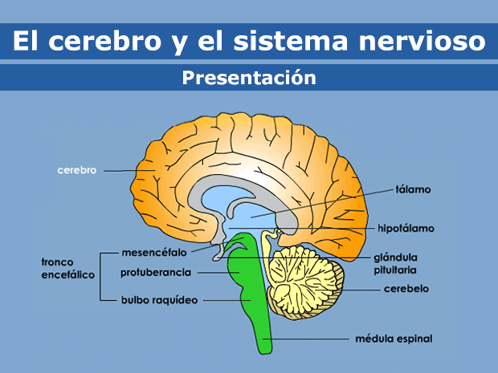
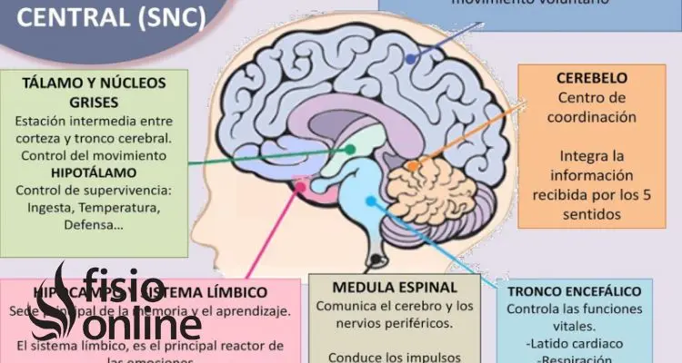

SISTEMA NERVIOSO
El sistema nervioso es común al ser humano y a la mayoría de los animales cordados, los artrópodos, los moluscos, platelmintos y cnidarios. Otros grupos animales, como los protozoos, los poríferos y las plantas, en cambio, no poseen sistema
nervioso diferenciado. Este aparato de transmisión de energía química y eléctrica recorre el cuerpo entero y permite la coordinación de los movimientos y acciones, tanto las conscientes como las reflejas, a partir de lo cual se distinguen
dos tipos de sistema nervioso: el somático y el autónomo. El primero se ocupa de la conexión entre las extremidades del cuerpo y el cerebro, mientras que el segundo lo hace de las acciones reflejas e involuntarias. Tiene tres funciones
básicas: la sensitiva, la integradora y la motora. – Sensorial: Percibe los cambios (estímulos) internos y externos con los receptores u órganos receptivos. Los cambios incluyen una amplia gama de factores físicos como la luz, presión
o concentración de sustancias químicas disueltas. – Integradora: Analiza la información sensorial y toma las decisiones apropiadas. Se activa o modifica por la información que está almacenada y se recupera de la memoria. – Motora: Provoca
respuestas de músculos o glándulas. El sistema nervioso puede estimular músculos y glándulas para que actúen o inhibirlos.

CEREBRO
El cerebro está compuesto por tres grandes partes: el prosencéfalo, el mesencéfalo y el robencéfalo. El prosencéfalo El prosencéfalo (también conocido como "cerebro anterior") es la parte más voluminosa y compleja del cerebro. Está formado
por el telencéfalo, el área con todos los pliegues y surcos que se suele ver en las ilustraciones del cerebro, así como por otras estructuras que hay debajo de él. El telencéfalo contiene la información que, básicamente, nos convierte
en quienes somos: nuestra inteligencia, nuestra memoria, nuestra personalidad, nuestras emociones, nuestra habla y nuestra capacidad de sentir y de movernos. Áreas específicas del telencéfalo se encargan de procesar diferentes tipos de
información. Se llaman lóbulos, y hay cuatro: el lóbulo frontal, el parietal, el temporal y el occipital. El telencéfalo se divide en dos mitades, llamadas hemisferios. Están conectadas por la parte central mediante un haz de fibras nerviosas
(el cuerpo calloso) que permite que se comuniquen entre sí. Aunque ambas mitades puedan parecer idénticas, como una imagen y su reflejo, muchos científicos creen que tienen funciones diferentes. El hemisferio izquierdo se considera el
lado lógico, analítico y objetivo. El hemisferio derecho se considera el lado más intuitivo, creativo y subjetivo. Por lo tanto, mientras usted hace el balance de cuentas a fin de mes, utiliza el hemisferio izquierdo. Pero, mientras escucha
música, utiliza el lado derecho del cerebro. Se cree que en algunas personas predomina más el hemisferio izquierdo o el hemisferio derecho, mientras que en otras no predomina ningún hemisferio porque utilizan ambos hemisferios en la misma
medida. La capa más externa del telencéfalo se llama córtex o corteza cerebral (también conocida como la "materia gris"). La información recogida por los cinco sentidos llega al córtex cerebral. Después, esta información se envía a otras
partes del sistema nervioso para su ulterior procesamiento. Por ejemplo, cuando usted toca un horno caliente, no solo recibe el mensaje de que retire la mano, sino que esa información también se dirige a otras partes del cerebro para ayudarlo
a recordar que no vuelva a tocar un horno caliente. En la parte interna del prosencéfalo se encuentran el tálamo, el hipotálamo y la hipófisis: El tálamo se encarga de enviar los mensajes procedentes de los órganos sensoriales, como los
ojos, los oídos, la nariz y los dedos, a la corteza cerebral. El hipotálamo controla el pulso, la sed, el apetito, los patrones de sueño y otros procesos que ocurren en el organismo de forma automática. El hipotálamo también controla la
hipófisis, una glándula que fabrica las hormonas que controlan el crecimiento, el metabolismo, el equilibrio de agua y minerales, la maduración sexual y la respuesta al estrés. El mesencéfalo El mesencéfalo (también conocido como "cerebro
medio"), situado debajo de la parte central del prosencéfalo, actúa como un maestro de ceremonias, coordinando todos los mensajes que llegan al cerebro y los que salen hacia la médula espinal. El rombencéfalo El rombencéfalo (también conocido
como "cerebro posterior"), se encuentra debajo de la parte posterior del telencéfalo. Está formado por el cerebelo, el puente y el bulbo raquídeo (o médula oblonga). El cerebelo, también conocido como "el pequeño cerebro" porque parece
una versión a pequeña escala del cerebro, controla el equilibrio, el movimiento y la coordinación. El puente y el bulbo raquídeo, junto con el mesencéfalo, se suelen conocer como el tronco encefálico (o tallo cerebral). El tronco encefálico
recibe, envía y coordina los mensajes cerebrales. También controla muchas de las funciones que el cuerpo realiza automáticamente, como la respiración, la frecuencia cardíaca, la tensión arterial, el tragar, la digestión y el parpadeo.

SISTEMA NERVIOSO PERIFERICO
Si los receptores sensoriales de la piel detectan dolor o un cambio de temperatura transmiten un impulso (señal) que llega al cerebro. El impulso viaja a lo largo de un nervio sensorial hasta la médula espinal. Cruza la sinapsis (unión
entre dos células nerviosas) entre el nervio sensorial y una neurona de la médula espinal. El impulso va desde la neurona de la médula espinal hasta el lado opuesto de la médula espinal. El impulso asciende por la médula espinal y a través
del tronco del encéfalo hasta el tálamo, que es un centro de procesamiento de la información sensorial ubicado en las profundidades del encéfalo. El impulso cruza una sinapsis en el tálamo hacia las fibras nerviosas, que llevan el impulso
de la corteza sensorial cerebral (el área que recibe e interpreta la información desde los receptores sensoriales). La corteza sensorial percibe el impulso. Entonces se inicia el movimiento, lo que desencadena que la corteza motora (el área
que planea, controla y ejecuta los movimientos voluntarios) genere un impulso. El nervio que lleva el impulso cruza hasta el lado opuesto de la base del cerebro. El impulso se envía a la médula espinal. El impulso cruza la sinapsis entre las
fibras nerviosas de la médula espinal y un nervio motor que se encuentra en la médula espinal. El impulso se desplaza hacia el exterior de la médula espinal a lo largo del nervio motor. En la unión neuromuscular (el lugar donde los nervios
se conectan con los músculos), el impulso cruza desde el nervio motor hasta los receptores situados sobre la placa motora terminal del músculo, donde el impulso estimula al músculo para que se mueva. Si la sensación se produce de repente y
es grave (como sucede al pisar una piedra afilada o al tomar una taza de café muy caliente), el impulso puede viajar a la médula espinal y directamente de vuelta al nervio motor, sin pasar por el cerebro. El resultado es una respuesta rápida
de un músculo, al retirarse inmediatamente de lo que sea que esté causando el dolor. Esta respuesta se denomina reflejo vertebral.

SISTEMA NERVIOSO CENTRAL
El sistema nervioso central (SNC) es una estructura compleja que poseen los seres humanos y animales (vertebrados y casi todos los invertebrados), que se encarga de procesar nuestros pensamientos y toda la información que obtenemos a través
de los sentidos. Está compuesto por el encéfalo y la médula espinal, los cuales están protegidos por las meninges y el líquido cefalorraquídeo. Forma parte del sistema nervioso, encargado de recibir y emitir señales de estímulo en todo
el cuerpo, junto con el sistema nervioso periférico (SNP), compuesto por nervios sensitivos y ganglios que se conectan con el sistema nervioso central.En el sistema nervioso central se llevan a cabo los procesos mentales necesarios para
comprender la información que recibimos desde el exterior. Asimismo, es el sistema encargado de transmitir ciertos impulsos hacia los nervios y los músculos, por lo que dirige sus movimientos. De esta manera, el sistema nervioso central
se vale de las neuronas (sensoriales y motoras) del encéfalo y la médula espinal para provocar las respuestas precisas a los estímulos que el cuerpo recibe. Por ello, por ejemplo, se puede cambiar de conductas, incluso, tomando en cuenta
las experiencias pasadas. La importancia del sistema nervioso central está en la capacidad de controlar las funciones corporales, de desarrollar conocimientos, aprendizajes, distinguir emociones, entre otros, especialmente desarrollados
por el ser humano. Es decir, el sistema nervioso central nos permite reconocernos como individuos, ser conscientes de quiénes somos, de qué hacemos y sentimos.